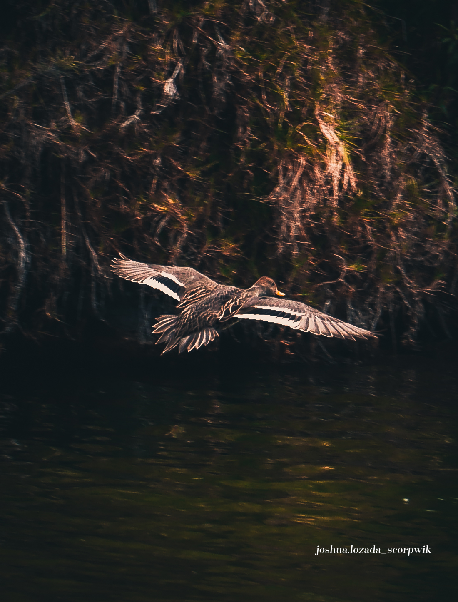

IMPONENCIA NATURAL
Este proyecto nació como participación para un certamen ecuatoriano de fotografía de naturaleza. El objetivo principal fue documentar la belleza y la imponencia de las aves en su hábitat, yendo más allá del simple registro biológico. A través del análisis de diferentes especies y sus comportamientos, busqué otorgarles un tratamiento visual impactante que resalte su majestuosidad, sus texturas y el papel vital que juegan en nuestra biodiversidad.
Post-Producción:
Equipo Fotográfico:





El Reto del Entorno
La fotografía de vida silvestre exige una inmensa paciencia y adaptabilidad. Captar aves en vuelo o en momentos de quietud requirió dominar las velocidades de obturación altas y aprovechar las horas de luz dorada.
El revelado digital se centró en realzar la microtextura de los plumajes y generar un contraste dramático con el fondo natural, separando al sujeto de su entorno para lograr ese toque impactante que exigía el concurso.
Elementos Destacados
- Composición Natural: Uso de enmarcado natural proporcionado por la vegetación ecuatoriana.
- Velocidad y Precisión: Congelación de movimiento en escenarios dinámicos.
- Colorimetría: Revelado enfocado en la fidelidad de los colores vibrantes de las especies.
- Análisis de Especies: Estudio previo del comportamiento de las aves para anticipar la toma.